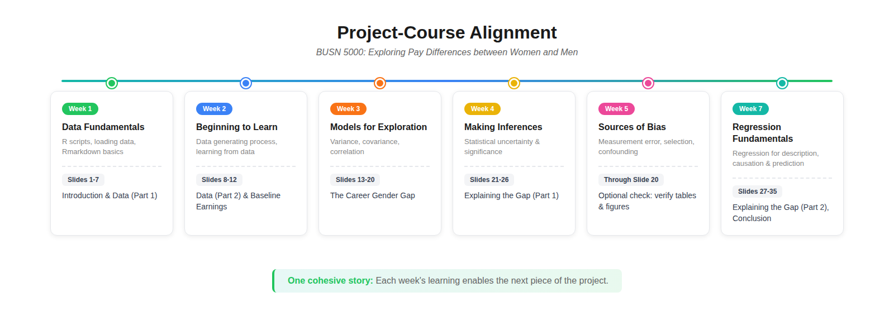

3 Main Project
The Main Project — Exploring Pay Differences between Women and Men — is the central artifact of BUSN 5000. You’ll use R and R Markdown to conduct an empirical analysis of the gender wage gap using the March 2024 CPS, then “knit” the code and your write-ups together into a 35-slide PDF deck.
The Project counts for 20% of your course grade (per the syllabus).
This chapter walks through the project one slide at a time. Each slide has either a coding task, a write-up task, or both — and a point allocation. Treat it as a checklist you can work through in order.
3.1 Project-course alignment
The project is intentionally built to mirror the course content week by week. As you cover new material in class, the next chunk of the project becomes doable.

The image above shows the in-person (16-week) Spring/Fall pacing. The BUSN 5000E summer schedule is condensed — two course modules per calendar week. Re-mapped to BUSN 5000E calendar weeks:
- Week 1 (Modules 1–2, Data Fundamentals + Beginning to Learn): unlocks project slides 1–12
- Week 2 (Modules 3–4, Models for Exploration + Making Inferences): unlocks slides 13–20
- Week 3 (Modules 5–6, Measurement Error & Confounding): optional check on tables & figures through slide 20
- Week 4 (Modules 7–8, Bayesian + Regression Fundamentals): unlocks slides 21–35; Project Progress Check due Mon Jul 6
- Week 7: Final Project due Thu Jul 23
If you fall behind on the course content, the project gets harder fast. Stay on schedule.
3.2 Before you start
This chapter assumes you’ve completed Setup and the Pre-project and that your Project/ directory already contains the pre-project assets (CSS file, LF.R, raw CSVs in data/, etc.). The Main Project pack adds a few more files to that same directory:
project.Rmd— the working file you’ll edit and knitcpsmar_e.R— the R script that creates the project’s data extract from the raw CPS filescheck_setup_project.R— verifies your file sort for the main project
Sort those into your existing Project/ directory following the same conventions as the pre-project (Rmd in root, R scripts in r/, PDFs in root, etc.). Then run check_setup_project.R from RStudio (open the script, Select All, Run) to confirm everything’s in place.
3.3 General rules
Before you write a single line of code, internalize these:
3.3.1 Slide format
A properly constructed slide deck has 35 slides on 35 pages of PDF output, rendered in landscape mode, with every detail of the formatting matching the Final Project reference in the Submission chapter.
If your deck doesn’t comply exactly, it will receive a 0%.
3.3.2 Write-up line limits
Each write-up slide has a specific line limit (noted in the slide’s section below). We will not read beyond the line limit. Stay disciplined — concise writing is what’s being graded, not volume.
“Lines of text” means rendered, countable lines on your final PDF — not sentences, and not lines as they appear in RStudio’s editor or output preview. A long sentence that wraps into three visual lines on the rendered slide counts as three lines.
Submissions that exceed the line limit are heavily penalized. Always check your knitted PDF and count the actual visible lines on the slide before you submit.
3.3.3 Echo settings
The template’s global echo = TRUE setting displays your code on each slide by default. We’ve individually overridden this to echo = FALSE on a specific list of chunks where displaying the code would be redundant or take up unnecessary space:
- The
.5chunks (btl2.5,mi2.5,mi3.5,reg1.5,reg2.5) — these display tables and figures from objects defined in the previous chunk; the “code” is just the object name. - The three
datasummarychunks (mi1,ed_vars,demo_vars) —datasummarycalls are long and not informative to show. - The appendix
var_doc_tablechunk — just renders the documentation table built invar_doc.
Do not edit these echo settings. They exist to keep the deck to exactly 35 slides.
3.3.4 HTML commands wrapping chunks
Some chunks are wrapped in <div class="table-..."> and </div> tags. These are required for table formatting. Do not edit or remove them.
3.3.5 The YAML block
When you open project.Rmd for the first time, fill in your name on the author: line of the YAML — that’s the only change you should make to the YAML. After your name is in, save the file under a new name following the convention from the Submission chapter: firstname_lastname_project.Rmd.
The canonical project YAML block (for reference and recovery if yours gets corrupted):
---
title: "BUSN 5000 Project"
subtitle: "Exploring Pay Differences between Women and Men"
author: "First Name Last Name"
date: |
| Summer 2026
| (updated `r format(Sys.time(), '%d %b %y')`)
output:
ioslides_presentation:
css: css/project_slidedeck.css
widescreen: true
---Do not change anything else in the YAML. Edits beyond the author: line break the rendering — see Common Errors §6.4.2 for the fix when this happens.
3.3.6 The setup chunk
The setup chunk loads the required packages and sets global options. Do not change anything in the setup chunk.
The default echo = TRUE is intentional. The eval toggle on each chunk is where you flip a chunk from “not run” to “run” once you’ve completed it — and that toggle applies only to content chunks (btl1, btl2, mi1, etc.), never the setup chunk. See Common Errors §6.3.3 if you’ve accidentally touched it.
Work the project code chunks in stages. After you complete a chunk and confirm it runs cleanly (click the green play button at the top-right of the chunk), set eval = TRUE on that chunk so its output appears when you knit. You can run individual chunks without knitting the entire document.
3.4 A note on units
Throughout your write-ups, use percent and percentage point correctly. They are not interchangeable.
A wage gap going from 25% to 20% is a 5 percentage point decrease — not a 5% decrease. (A 5% decrease from 25% would be 23.75%, not 20%.) Mixing the two is a recurring point of deduction.
3.5 Slide-by-slide instructions
The point allocation for each graded slide is shown in parentheses next to the slide title. Slides without a point allocation are section dividers or scaffolding chunks (the code chunks whose output is displayed on the next .5 slide).
3.5.1 Front matter (slides 1–2)
3.5.1.1 Slide 1: BUSN 5000 Project
Title slide. It’s auto-formatted with your name from the YAML author: line.
3.5.1.2 Slide 2: Academic Honesty Statement (1 point)
Indicate your compliance by typing your first and last name on the “Signature:” line. You may consult Terry Analytics Lab staff, the TA, or the instructor for help — but you may not seek assistance or otherwise collaborate with anyone else.
3.5.2 Introduction (slides 3–4)
3.5.2.1 Slide 3: Introduction
Section divider.
3.5.2.2 Slide 4: Overview (2 points)
Provide a brief overview of the project. Include:
- What you are trying to learn about
- The data you are using to learn
- A brief summary of your findings
Limit your overview to 6 lines of text.
To quote Yoda: “Do or do not. There is no try.” When you explain what your project is about or summarize what you learned, don’t say “I try / seek / look / aim / attempt (or am trying / seeking / …)”. Instead, say “I show / document / demonstrate / report / find …”. Never say “I hope…”
You might write this slide last. It’s easier to summarize your findings after you’ve completed the analysis.
3.5.3 Data (slides 5–8)
3.5.3.1 Slide 5: Data
Section divider.
3.5.3.2 Slide 6: March 2024 CPS (4 points)
Using the ASEC documentation (cpsmar24_documentation.pdf), provide a brief overview of the March 2024 CPS. Include:
- Approximately the number of households surveyed
- A description of the standard monthly CPS
- The additional information collected in the ASEC
Limit your summary to 4 lines of text.
Do not copy and paste from the CPS documentation. Write it in your own words.
3.5.3.3 Slide 7: March 2024 CPS Extract (4 points)
Complete the read_data code chunk to read the extract you created with cpsmar_e.R.
Then, in the write-up section, explain the actions you applied to the March 2024 survey in cpsmar_e.R to create the data extract cpsmar_e.csv. Include:
- The variables you selected from the person file
- The variables you selected from the household file
- The restriction(s) you applied to the data extract
- The number of observations and variables in the data extract
Limit your explanation to 6 lines of text.
Refer to each variable by its plain English meaning, not the name used in the script. Refer to the key tidyverse “verbs” in the script, like mutate and rename.
3.5.3.4 Slide 8: Analysis sample (2 points)
Complete the btl1 code chunk to create your analysis sample (cpsmar_a) with the following restrictions and additions:
- Restrict to individuals who are 23 to 62 years old (inclusive)
- Restrict to individuals who have positive earnings
- Create a character-valued
gendervariable
Underneath the code chunk, document the number of observations in your analysis sample.
Limit your documentation to 2 lines.
Refer to your notes for examples of filter and mutate. Consult the Environment tab in the Northeast pane of RStudio for information about the cpsmar_a data frame.
3.5.4 Baseline earnings distributions (slides 9–12)
3.5.4.1 Slide 9: Baseline earnings distributions
Section divider.
3.5.4.2 Slide 10: Plotting earnings distributions
Complete the btl2 code chunk to:
- Create the
figure1ggplot object (the earnings distribution by gender plot) - Calculate average earnings for each gender using the
earnings_fvmobject - Pull the average earnings for women and men into single values (
avg_earnings_f,avg_earnings_m) usingfilterandpull
3.5.4.3 Slide 11: Distribution of earnings by gender (8 points)
Complete the btl2.5 code chunk to display Figure 1 by writing the name of the Figure 1 object.
3.5.4.4 Slide 12: Baseline comparisons (4 points)
Summarize the main empirical facts associated with Figure 1. Include:
- A description of the most important fact communicated by the figure
- The average earnings of men and women
- The dollar difference and percentage difference in average earnings between men and women in the sample
Limit your summary to 5 lines of text on the slide.
Use inline R syntax with the avg_earnings_f and avg_earnings_m objects to insert the respective averages in your write-up (rather than typing the numbers manually).
3.5.5 The career gender gap (slides 13–20)
3.5.5.1 Slide 13: The career gender gap
Section divider.
3.5.5.2 Slide 14: Wages and hours differences (8 points)
Complete the mi1 code chunk to create and display Table 1 (wages and hours by gender).
3.5.5.3 Slide 15: Documenting the differences (2 points)
Summarize the wage and hours differences presented in Table 1.
Limit your documentation to 3 lines of text on the slide.
3.5.5.4 Slide 16: Plotting career log wage profiles
Complete the mi2 code chunk to estimate log wage profiles for women and men and create Figure 2.
3.5.5.5 Slide 17: Career log wage profiles (8 points)
Complete the mi2.5 chunk to display Figure 2.
3.5.5.6 Slide 18: Estimating wage differences over a career
Complete the mi3 code chunk to create Table 2. This involves:
- Creating
malesandfemalesobjects usingfilterandrename - Merging the two into the
diff_fvmobject usinginner_join - Calculating the difference between average log wages using
mutate - Grouping by
age_group - Using
kable()to organize the results into thetable2object
3.5.5.7 Slide 19: Evolution of the gender wage gap (8 points)
Complete the mi3.5 code chunk to display Table 2.
3.5.5.8 Slide 20: Discussing the gender wage gap evolution (2 points)
Summarize the results presented in Figure 2 and Table 2.
Limit your summary to 3 lines of text on the slide.
3.5.6 Explaining the gender wage gap (slides 21–30)
3.5.6.1 Slide 21: Explaining the gender wage gap
Section divider.
3.5.6.2 Slide 22: Fitting the log wage profiles
Complete the reg1 code chunk to create Figure 3 by fitting the career profiles with a quadratic in age.
3.5.6.3 Slide 23: Log wage profiles with quadratic fits (8 points)
Complete the reg1.5 chunk to display Figure 3.
3.5.6.4 Slide 24: Gender differences in education (8 points)
Complete the ed_vars code chunk to create and display Table 3 (educational attainment by gender).
3.5.6.5 Slide 25: Gender differences in demographics (8 points)
Complete the demo_vars code chunk to create and display Table 4 (demographic characteristics by gender).
3.5.6.6 Slide 26: Documenting differences in characteristics (4 points)
- Summarize the educational attainment differences presented in Table 3
- Summarize the differences in demographic characteristics presented in Table 4
Limit your documentation to 6 lines of text on the slide.
3.5.6.7 Slide 27: Controlling for education and demographic characteristics
Complete the reg2a code chunk to create:
- The
singlessubset of the analysis data - The
modelsobject containing five regression models that incrementally add controls for education and demographic characteristics, with the fifth restricting to unmarried workers without children under 6 (“Only Singles”)
In the regression analysis, you’ll distinguish between personal and household characteristics among the demographic variables.
- Moving from top to bottom in the
modelsobject, the list of controls grows as indicated by the name of the model — with the exception of the final model “Only Singles”, which estimates the same relationship as the “Add Person” model but on the new subset. - To decide whether a variable belongs in the “Add Person” or “Add Household” model, ask yourself: “Can I define this variable for a particular individual irrespective of other individuals who may or may not exist in their life?” If yes → Person. If no (it depends on someone else, like a spouse or a child) → Household.
3.5.6.8 Slide 28: Reporting the results
Complete the reg2b code chunk to create Table 5. This involves:
- Constructing the coefficient map object to display only the gender and age coefficient estimates
- Constructing the goodness-of-fit object to display sample size and \(R^2\) values
- Constructing a
rowsobject to distinguish the regression specification associated with each column
Make sure you report robust standard errors and indicate that you do in a table note.
3.5.6.9 Slide 29: Explaining the gender wage gap (8 points)
Complete the reg2.5 chunk to display Table 5.
3.5.6.10 Slide 30: Documenting the findings (4 points)
Summarize how the estimated average gender wage gap changes as you add education, personal, and household characteristics to the regression — and then how it changes when the sample is restricted to singles.
Limit your documentation to 6 lines of text on the slide.
Start your write-up with the baseline model and describe subsequent results relative to the baseline. Focus on the Female coefficient estimate and its standard error. Remember how the coefficient estimate is correctly interpreted.
3.5.7 Conclusion (slides 31–32)
3.5.7.1 Slide 31: Conclusion
Section divider.
3.5.7.2 Slide 32: Summary (4 points)
Briefly summarize the objective of the project and its main findings. Note:
- The sample on which your analysis is based
- The overall gender wage gap
- How it evolves over a career
- How it varies when controlling for education and demographic characteristics
Limit your documentation to 7 lines of text on the slide.
3.5.8 Appendix (slides 33–35)
3.5.8.1 Slide 33: Appendix
Section divider.
3.5.8.2 Slide 34: Data documentation
Complete the var_doc code chunk to create a table of the main variables used in this project with their definitions.
3.5.8.3 Slide 35: List of main variables with definitions (4 points)
Once you complete the var_doc chunk on the previous slide, set eval = TRUE on this slide to render the table of main variables with their definitions.
3.6 Submission
See the Submission chapter for:
- Filename convention (
firstname_lastname_project.pdf) - The HTML → PDF workflow
- Browser-specific save-as-PDF settings
- The 35-slide visual reference
3.7 Common pitfalls
The recurring failure modes for the Main Project are catalogued in Common Errors. The ones most specific to the Main Project (vs. the Pre-project) are:
- Variable name confusion — defining
cpsmar_abut referencingcpsmar_e(or vice versa) in a later chunk. See Common Errors §6.3.2. - Forgetting to run
cpsmar_e.Rbefore knitting. See Common Errors §6.3.1. - Touching the setup chunk’s
include = FALSE— same scaffolding error as the pre-project. See Common Errors §6.3.3. - Editing the YAML beyond the author line. See Common Errors §6.4.2.
When in doubt, see Common Errors — most issues have already been documented.
3.8 What happens next
- For the optional Project Progress Check at Week 4, see Chapter 5: Progress Check.
- When the Final Project deadline arrives, see Chapter 6: Submission for the save-as-PDF walkthrough and the filename convention.